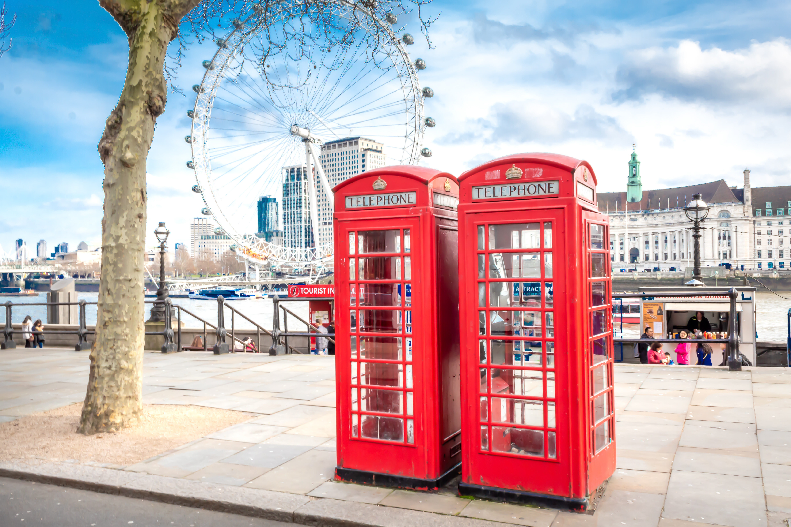
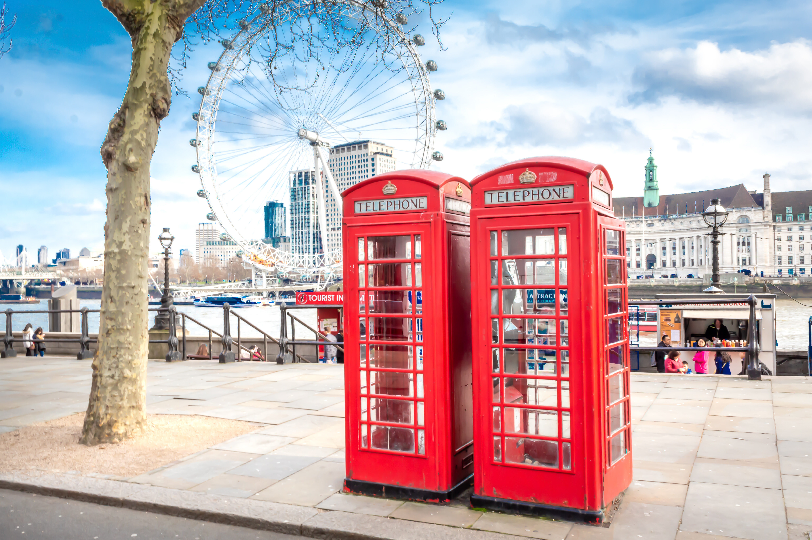

1 star offer
Accomodation: 2 stars Sophia hotel
Day 1:
You will start your day by visiting the iconic British Museum to see its impressive collection of art and artifacts from around the world.
Next, you will visit Covent Garden, known for its independent cafes, pubs, and shopping.
Finally, you will visit the Houses of Parliament and Big Ben to take in their stunning architecture.
Day 2:
You will start your day by taking a ride on the London Eye for panoramic views of the city.
After that, you will visit the Tower of London to learn about its history and see the Crown Jewels.
Finally, you will walk across the Tower Bridge and visit the Tower Bridge Exhibition to learn about the bridge's design and construction.
Day 3:
You will start your day by visiting the Natural History Museum to see the impressive collection of natural specimens and learn about the history of life on Earth.
Next, you will visit the Royal Observatory in Greenwich to learn about the history of astronomy and see the Prime Meridian line.
Finally, you will take a stroll through Hyde Park, one of London's largest parks, and enjoy the beautiful greenery and lake.